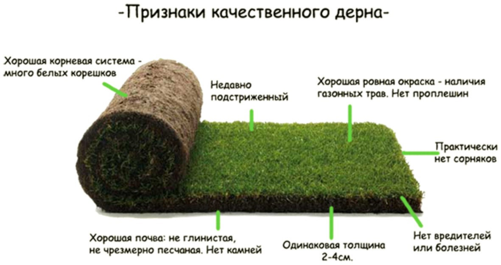
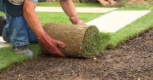
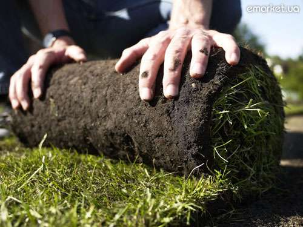
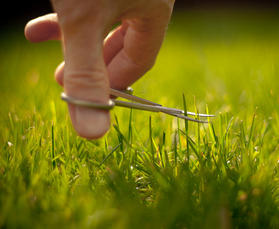

| Рулонний газон |
|
Чернівці – це місто, котре може похвалитися великою кількістю заможних людей, що у свою чергу підштовхує до розвитку такого виду діяльності, як ландшафтний дизайн у нашому регіоні – в Чернівцях та у Чернівецькій області. Це позитивний показник, позаяк такі роботи як: укладка рулонного газону, благоустрій території, встановлення бруківки (тротуарної плитки), автоматичний полив, посадка декоративних рослин, все це дає можливість заробітку та розвитку фахівцям-ландшафтникам.
В Чернівцях ландшафтні фірми пропонують різноманітного роду рулонний газон – це універсальний, спортивний, тіньовий.
Отож, що таке рулонний газон (Чернівці)? Який рулонний газон в Чернівцях обрати? Про все це мова йтиме нижче.
Вибір рулонного газону. 
Основний критерій вибору – свіжість. Газон в рулонах необхідно купувати у той самий день, коли його зрізують. Якщо усередині трава тепла, відчувається “прілий” запах, а середина рулону пожовтіла – товар несвіжий. Є чималий ризик того, що він не приживеться після укладання. Новий газон хорошої якості можна кілька разів згортати і розвертати. Він не розпадеться і не втратить своєї щільності. Трава має бути скошена рівномірно, а товщина дернини газону не повинна перевищувати 15-25 мм. На розгорнутих рулонах не повинно бути залисин.
Завдяки підбору різних травосумішей рулонні газони вирощуються різних видів:
Спортивний рулонний газон завжди стійкий до високих навантажень і до несприятливих погодних умов. У дощову погоду на ньому не повинно з'являтися калюж або болота, а в суху – пилюки. Газон має бути м'яким, зручним для спортивних ігор. Тому дернина спортивного газону міцніша і еластичніша, їй потрібна увага і щоденний догляд.
Універсальний рулонний газон самий практичний і невибагливий. Такий рулонний газон служить для покриття ділянок, садів і різних територій. Газон сам по собі служить природним фільтром. Він затримує до 90% піску і пилу з повітря. Це створює комфортні умови для повноцінного відпочинку. Універсальний рулонний газон є найстійкішим до пошкоджень, витоптування, легко приживається і не вимагає особливого догляду.
Застелення (укладання) рулонного газону в Чернівцях.
 Рулонний газон застеляють (укладають) від ранньої весни до пізньої осені. Укладати газон слід протягом 3-5 днів, після того, як його зрізали з поля. Застеляти його слід у шахматному порядку і по прямій лінії. Рулони кладіть максимально близько один до одного. Після укладання газон необхідно утрамбувати і рясно полити. Протягом тижня після застелення, за відсутності дощів, газон поливайте щодня, надалі досить і 2-х разів на тиждень.
Догляд за рулонним газоном.

Перший покіс газону роблять після того, як трава досягла 10-15 см, це приблизно через 2 тижні. Восени, в кінці вересня газон стрижуть під сніг, залишаючи 4-6 см заввишки. У перший місяць після укладання не бажане активне використання газону.
Замовити рулонний газон (газон в рулонах) в Чернівцях, замовити послугу "Укладка рулонного газону Чернівці", або ж домовитись про догляд за газоном Ви можете звернувшись до нас за адресою Україна, м. Чернівці, вул. Фастівська 30 Б. +380509126841, +380970165646.
|